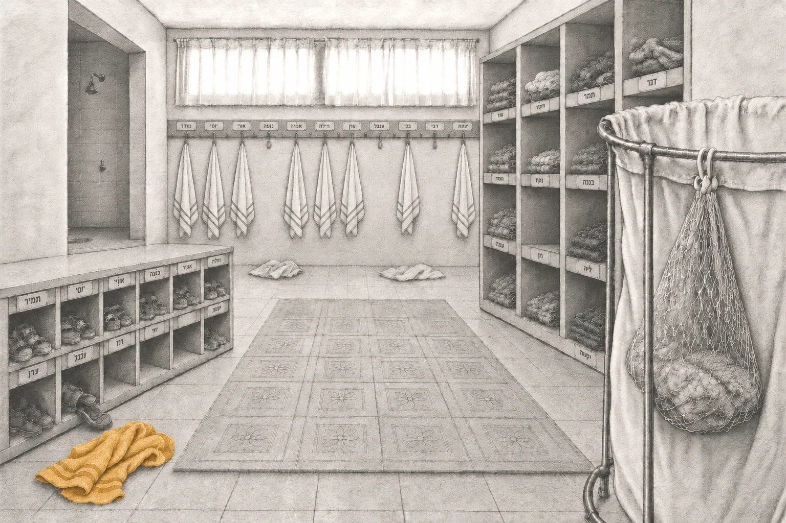

ילדה ערנית בת שבע פורשת את רגעי היום-יום של ילדותה בקיבוץ — ילדוּת שהיתה בו-זמנית של שפע ושל חֶסֶר. סיפור פרטי שהוא גם דיוקן של עולם שחלף מן העולם.
חזרה אל הבֶּיתֶלָדִים
בתמימות ילדית נחשפים יופיו ומורכבותו של בית גידול שחלף מן העולם: מרחב החיים של החינוך המשותף, צורת גידול גדושה באהבה ודאגה, הטומנת בחובה גם זרעי פורענות. ‘עיניים גדולות זה לא טוב’ הוא רומן צלול ומרגש, פוקח עיניים וצובט בכנותו.
קצת על הספר ←
רונית בלנרו-אדיב
פסיכולוגית קלינית עם התמחות בטיפול בילדים. נולדה, גדלה והתחנכה בשנות השבעים בקיבוץ של השומר הצעיר. ‘עיניים גדולות זה לא טוב’ הוא ספרה הראשון.
קצת עליי ←בואו נחזור לבֶּיתֶלָדִים
הסדרה בנויה מארבעה מפגשים כשהשניים הראשונים מתרחשים בנפרד לכל קבוצה: הורים מדברים עם הורים, ילדים מדברים עם ילדים. המפגשים השלישי והרביעי משותפים לכולנו – מפגש בין־דורי.
המפגשים נערכים פעם בשבועיים, בימי שלישי בשעה 19:00 למשך שעה וחצי.
נחזור אל הריצה ברגליים יחפות, אל החיבוק לאבא או לאמא שהלכו בסוף ההשכבה, אל רותק׳ה שמדדה לנו חום בחדר האיזולציה. נחזור אל הרגעים הקטנים שעיצבו אותנו, וננסה להתבונן מחדש בילדות שלנו, מתוך הפרספקטיבה שיש לנו היום כמבוגרים.
המפגשים פתוחים לנו, הילדים, לכם - הורינו, מקיבוצי הלינה המשותפת ומאלה ללא לינה משותפת ולכל מי שהספר נגע בו.
מעלה זיכרונות ומזכיר נשכחות... ממש מרגש! זה יעזור לי להסביר למשפחה שלי במילים שאין לי, למה אני זה אני ואיך נהייתי ככה...
מאימיילים ששלחתם אליי
גם אני גדלתי בחינוך המשותף בלינה בבית הילדים. אני רק מתחילה לקרוא אבל אני כבר עם דמעות רק מהעטיפה....
מאימיילים ששלחתם אליי